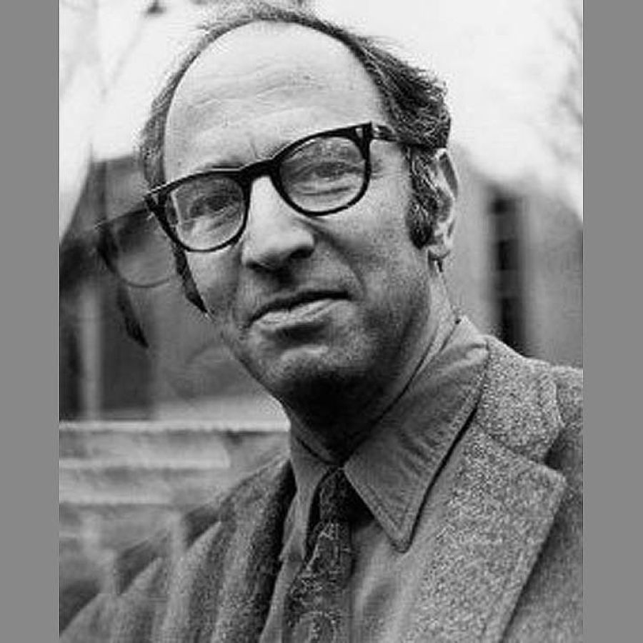

El libro que cambió todo
En 1962, Thomas Samuel Kuhn —físico de formación, filósofo e historiador por vocación— publicó La Estructura de las Revoluciones Científicas. Pocos libros en la historia del siglo XX tuvieron un impacto tan devastador sobre una disciplina: de la noche a la mañana, la imagen positivista de la ciencia como acumulación ordenada de verdades quedó destrozada.
La idea central de Kuhn es tan simple como perturbadora: la ciencia no crece como un árbol que añade ramas. La ciencia crece a sacudidas, a través de rupturas violentas que Kuhn llamó revoluciones científicas. Entre una revolución y la siguiente, los científicos trabajan dentro de un paradigma — un marco de suposiciones, métodos y valores compartidos que define qué cuenta como un problema, qué cuenta como una solución, y qué simplemente se ignora.

De la física a la filosofía
Thomas Samuel Kuhn (1922-1996) cursó su doctorado en física teórica en la Universidad de Harvard. Sin embargo, su trayectoria académica tomó un giro inesperado al impartir un curso de historia de la ciencia para estudiantes de humanidades. Al analizar profundamente los textos de Aristóteles, descubrió que su física no era simplemente "errónea", sino que era internamente coherente. Esta revelación lo llevó a preguntarse cómo comunidades de científicos brillantes podían operar bajo marcos conceptuales tan distintos. Esta idea sentaría las bases para su revolucionario concepto de paradigma.
Para entender a Kuhn, primero hay que entender lo que estaba cuestionando: la visión acumulativa de la ciencia. Según esa visión —muy extendida en el siglo XX—, la ciencia avanza agregando nuevos hechos a un cuerpo de conocimiento ya establecido. Cada generación de científicos sabe más que la anterior. Galileo sabe más que Aristóteles; Newton sabe más que Galileo; Einstein sabe más que Newton. El conocimiento sería como un río que siempre crece.
Kuhn arguye que esa imagen es una ilusión retrospectiva. Los libros de texto científicos reescriben la historia, presentando el pasado como si todo hubiera apuntado inevitablemente hacia el presente. Pero cuando uno estudia la historia real de la ciencia —sin esa teleología— la imagen es muy diferente.
¿Qué es un paradigma?
La palabra paradigma existía antes de Kuhn —significaba simplemente "ejemplo" o "modelo"— pero él le dio un significado completamente nuevo. Para Kuhn, un paradigma es mucho más que una teoría: es el conjunto de supuestos, métodos, valores y logros ejemplares que una comunidad científica comparte y que guía su trabajo sin que nadie los cuestione.
"Los paradigmas son realizaciones científicas universalmente reconocidas que, durante cierto tiempo, proporcionan modelos de problemas y soluciones a una comunidad científica."
— Thomas S. Kuhn, La Estructura de las Revoluciones Científicas, 1962
Pensemos en la física newtoniana como paradigma. Los físicos del siglo XVIII y XIX no se preguntaban si el espacio era absoluto, si el tiempo fluía de manera uniforme, o si la gravedad actuaba a distancia de manera instantánea. Esas eran las suposiciones del paradigma. El trabajo real consistía en resolver puzzles dentro de ese marco: calcular órbitas, medir resistencias, diseñar máquinas. Einstein no simplemente "añadió" algo a Newton: destruyó el marco conceptual entero.
El movimiento de los planetas visto desde dos marcos inconmensurables
Paradigma Ptolemaico
Paradigma Copernicano/Newtoniano
Los dos paradigmas no se contradicen simplemente: hablan idiomas distintos. No comparten preguntas ni criterios de éxito.
Las cuatro fases de la revolución científica
Kuhn propone que toda revolución científica sigue una secuencia reconocible. No es un proceso caótico: tiene una lógica, aunque sea una lógica de ruptura. Hacé click en cada fase para explorarla.
Fase 1: Pre-paradigmática
Ciencia Normal: resolver puzzles
La mayor parte de la actividad científica —lo que hacen los científicos en sus laboratorios, día a día— es lo que Kuhn llama ciencia normal. No se trata de descubrir verdades revolucionarias. Se trata de resolver puzzles dentro de un paradigma aceptado.
¿Qué es un puzzle? Un problema cuya solución se supone alcanzable con las herramientas del paradigma. Si un científico no puede resolverlo, el problema es del científico —no del paradigma. La ciencia normal es, en cierto modo, dogmática: no cuestiona sus propios fundamentos. Eso es, dice Kuhn, lo que la hace eficiente.
La ciencia normal exige que los científicos sean conservadores respecto al paradigma. Si cada vez que surge un dato raro se cuestionara toda la teoría, el progreso sería imposible. El dogmatismo crea el foco que permite profundizar. La apertura radical tiene su momento —la revolución— pero es la excepción, no la regla.
| Dimensión | Ciencia Normal | Revolución Científica |
|---|---|---|
| Actitud ante el paradigma | Lo acepta sin cuestionar | Lo reemplaza completamente |
| Tipo de problemas | Puzzles con solución garantizada | Crisis existencial del marco |
| Rol de las anomalías | Se ignoran o explican ad hoc | Acumuladas hasta hacerse insostenibles |
| Creatividad científica | Dentro de los límites del paradigma | Ruptura total de los límites |
| Ejemplo | Calcular la órbita de Urano (Newton) | Einstein reemplaza a Newton |
| Frecuencia | La mayor parte del tiempo | Momentos raros y convulsivos |
Anomalías, Crisis y Colapso
Ningún paradigma resuelve todos sus puzzles. Siempre hay resultados que no encajan, observaciones que incomodan, experimentos que dan resultados inesperados. A estos fenómenos que el paradigma no puede acomodar Kuhn los llama anomalías.
Lo crucial es que las anomalías por sí solas no derrocan un paradigma. Durante la ciencia normal, las anomalías se ignoran, se minimizan, o se explican con hipótesis ad hoc. Recordemos la clase 1: eso es exactamente lo que hacía la astronomía ptolemaica cuando las predicciones fallaban — añadir más epiciclos. El paradigma tiene una enorme capacidad de absorber golpes.
Simulador de Crisis de Paradigma
¿Cuántas anomalías puede tolerar un paradigma antes de entrar en crisis? Hacé click en "Añadir anomalía" y observá.
La crisis emerge cuando las anomalías se acumulan hasta un punto en que la comunidad ya no puede ignorarlas. El paradigma empieza a parecer no un marco de trabajo sino una camisa de fuerza. Los científicos comienzan a discutir los fundamentos —algo inusual en la ciencia normal— y surgen teorías alternativas en competencia.
La órbita de Urano no cuadraba con las predicciones newtonianas. ¿Colapso del paradigma? No. Adams y Le Verrier supusieron que había un planeta desconocido perturbando la órbita — y así predijeron y descubrieron Neptuno (1846). El paradigma absorbió la anomalía creando conocimiento nuevo. Pero la órbita de Mercurio —la precesión del perihelio— no tenía solución dentro de Newton. Esa anomalía persistente esperó a Einstein.
Inconmensurabilidad: mundos distintos
El concepto más radical y polémico de Kuhn es el de inconmensurabilidad. Dos paradigmas son inconmensurables cuando no comparten una medida común: no hay un lenguaje neutral desde el cual uno pueda decir "el paradigma A describe mejor la realidad que el paradigma B".
Esto no significa que todos los paradigmas sean igualmente válidos —Kuhn no es un relativista ingenuo—. Significa que el cambio de paradigma no es una corrección puntual sino una transformación global de la percepción. Después de la revolución copernicana, los científicos literalmente veían un mundo diferente cuando miraban al cielo.
"Los científicos que trabajan con diferentes paradigmas practican sus profesiones en mundos distintos. Los dos grupos ven cosas diferentes cuando miran desde el mismo punto en la misma dirección."
— Thomas S. Kuhn, La Estructura de las Revoluciones Científicas
¿Recuerdan la clase 3, sobre Hanson y la carga teórica de la observación? Kuhn radicaliza esa idea: no es solo que Brahe y Kepler "interpretan" distinto lo que ven. Es que el paradigma moldea la percepción de tal modo que dos científicos en paradigmas distintos literalmente ven cosas diferentes. La famosa figura del pato-conejo: no es que ves el mismo dibujo e interpretas diferente. Es que ves un pato, o ves un conejo. No ambos a la vez.
El flogisto y el oxígeno
Stahl y sus seguidores "veían" el flogisto escapar en la combustión. Lavoisier "veía" el oxígeno siendo absorbido. Con el mismo fuego y el mismo metal, veían procesos contrarios. No era solo una diferencia de interpretación: eran marcos conceptuales completamente distintos.
Electricidad antes de Franklin
Antes del paradigma de Franklin sobre la electricidad, no había acuerdo sobre qué era un "hecho eléctrico". Cada escuela construía su propio aparato experimental con sus propios supuestos. El paradigma crea el campo mismo donde se generan los datos.
La masa en Newton y en Einstein
La palabra "masa" aparece en ambas teorías. Pero en Newton es absoluta e invariante; en Einstein es relativa a la velocidad. No es el mismo concepto con distinto valor: son conceptos diferentes con el mismo nombre. Eso es inconmensurabilidad terminológica.
Galileo y la Luna (C4)
Cuando Galileo vio montañas en la Luna, los aristotélicos no simplemente "rechazaron" el dato: no podían verlo como dato dentro de su paradigma. La perfección esférica de los cuerpos celestes era un supuesto tan fundamental que las irregularidades eran literalmente invisibles.
Kuhn frente a sus críticos
La tesis de Kuhn provocó una de las discusiones más intensas de la filosofía de la ciencia del siglo XX. Sus principales interlocutores —Popper, Lakatos, Feyerabend— respondieron con posiciones propias. Comparemos brevemente.
Cuestionó a Kuhn: si la ciencia normal es dogmática e ignora las anomalías, ¿no es simplemente dogmatismo disfrazado de ciencia?
Intentó mediar entre Popper y Kuhn: ni pura refutación ni pura revolución irracional.
Radicalizó a Kuhn: si el cambio de paradigma no es racional, entonces la ciencia no tiene privilegio epistemológico especial.
Kuhn rechazó la etiqueta de relativista. Para él, la elección entre paradigmas no es irracional aunque no sea puramente lógica. Los científicos consideran la precisión de las predicciones, la amplitud del alcance, la simplicidad, la fertilidad heurística. Esos valores son compartidos aunque su aplicación no produzca un algoritmo mecánico de decisión. El cambio de paradigma es como una conversión, no como una demostración.
La Revolución Científica desde Kuhn
Ahora tenemos todas las piezas. Podemos releer la historia que estudiamos en las Clases 1 a 5 con los ojos de Kuhn. El resultado es iluminador: cada elemento encaja con perfecta precisión en el modelo kuhniano.
Preguntas de debate filosófico
- Si el cambio de paradigma es como una "conversión" y no como una demostración lógica, ¿significa eso que la ciencia no es objetiva? ¿O puede existir objetividad sin algoritmos de decisión?
- Kuhn dice que los libros de texto científicos reescriben la historia para hacerla parecer acumulativa. ¿Podés pensar en un ejemplo de tu libro de física o química donde esto ocurra?
- ¿Puede ocurrir algo similar a una "revolución de paradigma" en otras áreas del conocimiento — en arte, política, moral? ¿Hay inconmensurabilidad entre generaciones?
- Popper critica a Kuhn: "La ciencia normal es solo dogmatismo disfrazado." ¿Es esa crítica justa? ¿Se puede defender el conservadurismo científico?
- Kuhn fue un físico que se volvió historiador y filósofo. ¿Cambia algo el hecho de que su teoría fuera construida por alguien con experiencia científica directa, en lugar de por un filósofo de gabinete?